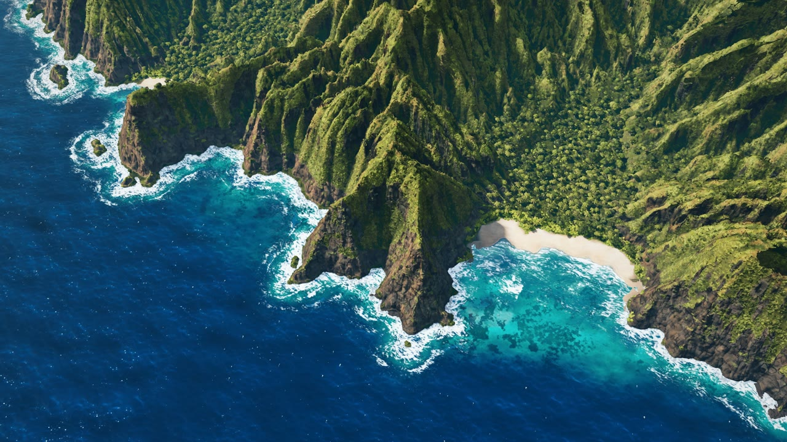

Na Pali · 程序化海岸
Leon Lin 用代码生成地形、侵蚀、森林、海浪、天空和光照，再以航线与镜头组织观看。它是针对特定风景持续调校的完整作品，提供技术与创意参考。
看原作画面、原理与来源 ↓FROM A COASTLINE TO A WORLD OF YOUR OWN
从一处海岸的技术参考，
到窗边停留、运河启程，
再到自己掌镜的漓江山水。
ORIGINAL / OUR WORK / REUSABLE METHOD
Leon Lin 用代码生成地形、侵蚀、森林、海浪、天空和光照，再以航线与镜头组织观看。它是针对特定风景持续调校的完整作品，提供技术与创意参考。
看原作画面、原理与来源 ↓老街窗景用于停留与观察，独立船坞车站提供呼船、靠泊和去留选择，漓江晨航支持航线、自由驾驶与画质调节。运河作品采用有来源素材，漓江由代码生成。
进入已有场景 ↓确认约束 → 固定模板 → 有界求解 → 独立验证。先锁定构图、尺度、素材和已认可模块，在限定参数与计算预算内迭代，再以多视角、连续运动、操作和性能验收。
展开四步流程 ↓现有代码与检查机制可以复用，完整自动拟合管线尚未实现。三种后期乘船方向仍是候选；以实际用途与可验证的质量、效率或体验增量决定下一步。
THE COLLECTION / 2026.10.26
一份原作参考 · 三处创作实践
本轮已收口，进入实际使用
同一种创作思路，延续出不同的空间和参与方式。本机版提供原作与三处实践的完整入口。在线版可运行我们的三处作品；原作提供画面、原理和来源，完整实时控制需本机运行服务。
完整原库的海岸、海浪、植被与天空。沿原作航线观看，也可以自己驾驶。
看创作方法与原始效果 ↗在木窗、河岸与书店之间停留。让一处有深度的雨后老街，成为日常的片刻风景。
窗边 · 河岸 · 书店 ↗另建的船坞与车站。呼船、等待靠泊，再选择登船离开，或在站台目送。
候船 · 靠泊 · 去或留 ↗峰林、岸林、晨雾与江面倒影。播放 45 秒航线，或用方向按钮自由观察。
四个机位 · 虚拟驾驶 · 两档画质 ↗每次只运行一个场景。准备完成后，离开画面暂停绘制，返回保留原视角；切换作品或停止后，需要重新准备。漓江首次生成约需 1—3 分钟。查看使用说明 ↓
01 / THE ORIGINAL · LIVE
原库场景 · 本机可驾驶
夏威夷 · 纳帕利海岸

源库渲染图 · 非本机实时截图作者让 AI 编写地形、侵蚀、森林、海浪、泡沫、云雾和光照，再沿预设路线移动相机，得到一段模拟无人机航拍。画面由 WebGL2 着色器和 JavaScript 计算，不依赖下载的贴图或现成三维模型。
这是一件针对特定海岸反复精调的作品：README 记录了 13 轮开发；海岸线有描摹数据与艺术控制点。它为我们提供了制作方法和可研究的实现，并非输入任意地名就能生成世界的工具。
运行方式 这里使用原库完整的地形、水、植被、天空与着色器，增加运行适配和驾驶控制；原样文件另行保留。原作实时计算较重，可在界面中选择分辨率。原库是创意与技术参考，我们的作品按自身的实际效果判断。
02 / POSSIBLE DIRECTIONS
供后续选择的方向
由实际使用决定是否继续
围绕一个可持续修改的世界，扩展题材、时间、参与方式和用途。每个方向先回答：观众具体能看到或做什么？
江南水巷、雪夜车站、沙漠遗迹、漂浮岛屿。建立统一的建筑、植物、光色规则，形成有辨识度的系列。
先验证：换三个机位，场景是否仍然成立？清晨走向夜晚，雨季转入落雪，城市从繁华渐渐荒芜。用同一空间里的变化表达时间。
先验证：变化是否连贯，是否带来新的感受？坐在窗边看雨，乘小船穿过街巷，选择路线和停留。把观看变成一段由自己掌握节奏的体验。
先验证：观众是否愿意停留、再回来？漂来的信、亮起的灯、即将离开的船。给场景加入事件与回应，让选择改变后续画面。
先验证：一个小选择，是否真的改变故事？跟随水滴进入地下，穿过植物内部，观察机器运转。用空间与镜头解释过程，具体知识仍需独立核验。
先验证：观众能否说清过程，而不只记得画面？把场景、天气、色调和运镜变成可选项，逐步导出壁纸、循环动画、分镜与短片，复用已经做好的世界。
先验证：第二件作品是否更省力、更可控？下方的窗景、车站和漓江已分别尝试了陪伴、叙事与自由取景。下面将这六类思路落到三种水上旅程，以及陪伴、参与和镜头创作三类产品形态。它们是后续候选，当前可以继续使用已有成果。
FUTURE COLLECTION / THREE POSSIBLE JOURNEYS
三张效果参考 · 后续产品方向
静态参考，实时体验待开发
船头建立观看的位置，水面带来行进感，远处的山群或天幕展开空间。沿着这个共同体验，可以把现有的风景观看，延续成三段可以启程、停留与回看的旅程。

01 / 最接近现有成果的延续
从空中掌镜，走向坐在筏头看山。
保留漓江峰林与水面，增加可见筏头、低位乘坐视角、缓慢前进和自由转头。让人可以跟着水流走，也可以停下来听一会儿。

02 / 新地点与近距离观察
沿着碧水，接近一面巨大的岩壁。
另建泻湖地形、临水峭壁和浅水层次，以长尾船作为观看位置。近处的岩纹、植被、船只和水色，一起建立空间尺度。

03 / 从风景走向想象世界
熟悉的城市上空，出现另一种天空。
以港湾、城市轮廓与摩天轮建立日常空间，让巨大的星河天幕、灯光和水面反射共同变化。游船缓慢经过，成为进入奇幻世界的路径。
图片来自你提供的截图，已用 AI 清理文字与平台界面，作为构图、色彩和体验方向参考。上方展示的是静态参考图；三种实时产品均需另行制作和验收。图片编辑记录 ↗
从窗边、竹筏和港湾中选择一处停留，逐步增加环境声、昼夜与天气。可探索专注背景、休息陪伴与个人风景收藏。
沿用车站的出发与选择，让观众掌握启程、停靠、去留和观看方向。可探索短程游览、叙事路线和有标记的知识旅程；解释性内容需独立核验。
把地点、时间、天气、机位和路线逐步变成可保存的选项。可探索壁纸、循环片段、分镜与短片制作；正式导出能力按实际用途专项验证。
这些形态对应上方的六类扩展思路。后续可先用一段可体验的小样验证停留意愿、控制感与重访价值，再决定是否产品化；商业需求与付费方式尚未验证。
03 / TWO PLACES · TWO EXPERIENCES
运河老街 · 旧船坞车站
两个独立的空间与体验
从窗边看一座老街，或在旧船坞旁等待下一班船。两件作品使用不同的建筑布局、地标、光照与事件；打开各自的实时场景，亲自停留或作出选择。
窗外一直在发生，
你可以只是坐一会儿。
雨停之后，坐在木窗边看云、河水与对岸的灯。近处留着茶杯与书，远处是有真实深度的窗、树和街道。也可以走到河岸，再看看那间书店。
船会靠岸，
你可以启程，也可以留下。
门吊与修理船守着旧船坞。跨过宽阔航道，是拱顶候船厅、票务台和临水站台。发出信号后，客船会真实驶来、转向、停靠，放下栈桥等你决定。
这是另建的船坞与车站：空间、主体模型、光照包和互动流程均独立于老街窗景。本站只记住这件作品中你上次的选择，供下次简短延续。
走进旧船坞车站 →此前“窗边”和“来信”使用同一套运河老街，只是两种交互模式。当时把它们称为两个独立作品，是交付范围错误。来信作为老街中的历史互动原型保留，独立第二件现在由上方的船坞车站承担。
04 / ANOTHER LANDSCAPE, WRITTEN IN CODE
兴坪山水意象 · 纯代码生成
45 秒晨航 / 自由观察
以黄布倒影的山水关系为参考，让峰林、相连山脚、岸林、晨雾与江面在浏览器里生成。沿江起飞，经过开阔水湾，最后停在主峰与完整倒影之间。山、水、植被和天空均由代码构建，场景不加载外部模型、图片、贴图或 HDR。
把晨光、峰林与水影连成一段可以自行掌镜的旅程。点击“启动漓江晨航”后再生成整片场景，生成期间会显示进度。首次准备仍需约一至三分钟；离开画面后暂停绘制，返回继续原来的视角。
默认“流畅”保留山形与草木，以较低渲染分辨率减轻负担；“清晰”提高画面、阴影与倒影分辨率。实际速度取决于设备和视角。查看当前效果与使用边界 ↓
自由观察时拖动、WASD 移动，Q/E 升降；C 返回航线，R 重新起飞，H 隐藏界面。画面内提供方向、升降与转头按钮；长按移动，松手停止，也可主动收起面板。
已有 V /“导出航拍”入口，目标规格为 45 秒、1920×1080、60 帧/秒 WebM，支持取消。当前版本未重新验收完整影片，正式使用导出前需专项复测；视频规格与实时帧率分别计算。
代码来源与许可 ↗WHAT WE HAVE / WHAT TO EXPECT
漓江当前版本 M8
2026.10.26 整理
已有成果作为网页中的互动展示模块使用。画面保持当前版本，后续根据实际使用反馈修复问题；三种后续产品方向留作选择。研究与演示是当前定位，具体价值与下一步判断见理解与复盘。
Na Pali 是 Leon Lin 的原作，提供创意和技术参考。窗外世界、旧船坞车站与漓江晨航是我们的三处实践；老街和船坞车站使用独立空间。旧老街的“来信”模式作为同场景历史原型保留。
实时场景需要准备地形、植被和光照。页面仅在你点击启动时载入，每次运行一处。准备完成后，离开画面暂停绘制，返回沿用原场景与视角；准备中的计算仍可能继续。主动停止、刷新页面或切换作品后，再次进入需要重新准备。
漓江先选“流畅”，尽量只保留一个正在运行的三维场景。可以暂停航拍、停在固定视角观看；需要结束计算时，点击预览上方的“停止并释放”。当前版本没有承诺实时 60 帧。
点“沿江、开阔水湾、群山、低位倒影”切换机位。按住方向、升降或转头按钮移动，松手停止；也可切到自由驾驶，使用 WASD 移动、Q/E 升降、拖动转向。C 切换驾驶与航拍，R 重新起飞，H 隐藏界面；点“显示控件”恢复。面板可手动收起。
漓江保留固定帧率的航拍导出入口，但当前 M8 完整影片尚未重新验收。若要制作正式影片，先做一次完整导出与播放核验。60 帧/秒是离线视频规格，和实时驾驶速度不同。
LESSONS / METHODS / CURRENT VALUE
研究与演示复盘
2026.10.26 · 当前共识
本项目主要积累了创作思路、可运行样例与部分工程能力。若以独特技术、稳定自动生产或直接产品化衡量，当前增量有限。已有成果可以使用，后续投入需要用具体用途和实际优势来证明。
原作参考、三个实践场景，以及播放驾驶、航线、画质档位、按需启动、离屏暂停和资源释放的代码与验收经验。这些能力可复用，替代性也较强。
尚未实现“任意参考图 → 快速生成高质量互动世界”的完整管线，也未证明比成熟工具更省时、画质更好或更易维护。自动参考拟合与商业需求均未验证。
功能跑通、投入时间和测试数量，各自只能说明对应事实。新的研发应围绕明确用途，证明省时、质量改善或实际体验增量后，再决定是否继续。
画面里的山、水、树只是元素；尺度、疏密、遮挡、光向、远近层次和观看位置共同决定质感。单张图只需当前视角成立，实时场景还要经得起转头、移动、倒影和连续运动。
最初的漓江指导把地形简化为大量独立孤峰，后来才补共同山脚、鞍部与低脊；增加树叶细节无法代替这些结构修正。前期还出现过将功能通过扩大为画质达标、将同场景两种模式算成两件作品的判断错误。复盘的重点，是把范围、视觉、操作和性能分别说清、分别验证。
“让 AI 参考图片写代码”只是其中一种做法。参考图、生成工具和网页渲染器承担不同任务，换框架或加长提示词，不能单独保证画质。
| 技术路线 | 主要做法与适合范围 | 需要接受的边界 |
|---|---|---|
| 图片分层与深度视差 2.5D | 用深度、前后层和遮挡补全保留图片外观，适合固定视角或小范围移动。 | 大幅转头、绕到背面或接近景物时，容易暴露缺失区域；不等于完整自由漫游。 |
| 成熟资产搭建真实三维 | 用模型、材质、布景与光照制作场景，接入网页交互。运河老街已有这类制作经验。 | 需要选材、整理尺度和材质、处理光照与性能；现成素材仍需组合和验收。 |
| 专用三维／世界生成 | 用训练好的模型生成物体或环境，再导出、修整并接入。可减少从零制作形状与材质的工作。 | 生成结果有差异；背面、可编辑性和网页性能需检查，动态水面及玩法需另外接入。 |
| 全程序化生成 | 通过算法控制地貌、植被、材质与变化。当前漓江主要采用这条路线。 | 复杂写实效果需要较多规则与调校；纯代码和无外部素材是制作约束，不自动带来产品优势。 |
我们已有部分固定规则、参数和验收机制，尚未整合成下面这套自动系统。可先让少量关键参数受控，再逐步增加自动化。
记录山体轮廓、水面边界、主体位置、相机和远近关系。分割与深度估计可以辅助提取；估计值需要核对，单张图无法唯一确定被遮挡的空间。
固定场景模板、素材版本、随机种子和成熟渲染模块，只开放山形、布局、相机、光雾等少量参数。通过的部分冻结，重复生成与局部迭代才有稳定基础。
在同机位比较轮廓、主体位置、色彩与层次，在明确边界内搜索参数。反向渲染是更深入的技术参考；搜索仍有计算成本，评分也不能代替审美判断。
检查近、中、远机位和一段真实路线，同时测操作、碰撞、等待与帧率。避免只拟合一张图；达到约定展示用途后收口，以实际反馈决定后续修改。
能带到新对话继续使用的沉淀，应包括：场景模板、参数文件、参考约束、自动对照脚本。说明文档用于指导，不能代替这些可运行能力。
专用生成模型把大量三维形状和外观经验学进模型，生成时推断三维资产；这与让编程模型逐次写造型代码不同。它们的优势是较快得到形状与材质初版，并能继续加工，但生成一个模型或环境后，仍需把它组织成可操作体验。
Hunyuan3D、TRELLIS.2 可生成三维资产及材质；Marble 面向环境生成，并提供多图、粗三维布局等控制方式。单个物体生成和整片世界生成应分别评估。
编程 AI 与制作工具处理尺度、布局、材质、光照、格式和性能，结合实际参考约束验证。生成器可被替换，经过验证的流程与配置继续复用。
接入水面、航线、驾驶、事件、页面生命周期与交互控件。项目后续的实际价值，要由具体体验及相对现成方案的优势证明。
以下链接解释各自技术能力，未在本项目完成整套接入或效果对比；工具能力与导出条件以其当前说明为准。
附参考图，并说明本次做图片、影片还是实时场景。若延续本项目，先读取项目 README、当前状态和方向说明。已有模板可直接调用；缺失的模块应明确列为待制作。
目标：一段可在网页操作的乘船小样。 范围：一处场景、一段固定路线，支持启程、暂停和转头。 路线：明确选择素材搭景、专用生成工具或程序化；素材规则单独写清。 约束：固定参考构图、相机、素材版本、随机种子和已验证模块。 迭代：只开放少量关键参数，提供同机位实际截图与差距说明。 验收：分别检查画面、操作、连续运动、加载与帧率。 收口：达到约定用途后结束，其余能力列为可选后续。
这张任务单帮助组织工作，不能替代算法、工具和可运行模板，也不保证一次生成成功。
下一次投入需要一个明确用途，并至少验证一种增量：比直接用成熟工具更省时间；同等成本下效果更好或更稳定；提供用户愿意停留、重访或实际使用的额外体验。商业需求、付费方式和相对优势仍需独立验证。
当前作为研究与演示子项目保留。三种水上产品方向继续作为候选，未因这份复盘自动进入研发或排期。
ONE MAP / THE WHOLE EXPLORATION
原作与三处实践的实际画面、三张后期参考、六类扩展、技术路线、控制方法、下次任务单，以及当前价值和使用边界，汇总为八个部分。已实现成果、静态参考与建议方案分别标注。
1800 × 7280 · 7 张效果与参考图 · 支持缩放与章节定位THE RESEARCH ARCHIVE
历史引导图记录原库、六类扩展与两个运河空间的研究过程，资料截至 2026.10.25。新增漓江与当前状态，以本页和成果汇总为准。